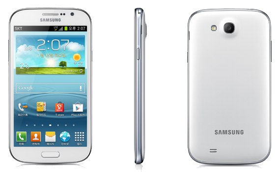

삼성 갤럭시 그랜드
1. 외관

삼성전자가 2012년 11월에 공개한 안드로이드 스마트폰.
2. 사양
| 프로세서 | 삼성 엑시노스 4412 SoC. ARM Cortex-A9 MP4 1.4 GHz CPU, ARM Mali-400 MP4 440 MHz GPU | ||
| 메모리 | 1 GB LPDDR2 SDRAM, 8 GB 내장 메모리, micro SDXC (최대 64 GB 지원) | ||
| 디스플레이 |
5.0인치 WVGA(480 x 800) RGB 서브픽셀 방식의 TFT-LCD 멀티터치 지원 정전식 터치 스크린 |
||
| 네트워크 | 기본 | GSM & EDGE | Wi-Fi 802.11a/b/g/n, 블루투스 4.0+LE |
| - | - | ||
| 카메라 | 전면 190만 화소, 후면 800만 화소 AF 및 LED 플래시 | ||
| 배터리 | Li-lon 2100 mAh | ||
| 운영체제 | 안드로이드 4.1 (Jelly Bean) | ||
| 규격 | 77.1 x 143.8 x 9.8 mm, 169 g | ||
3. 상세
2012년 11월에 출시한 중급형 사양의 대화면 스마트폰이다. 갤럭시 노트의 변종모델로, 갤럭시 S II와 갤럭시 노트가 스펙 상의 차이 별로 없는 것과 같이 갤럭시 S II Plus와 갤럭시 그랜드의 스펙은 별로 차이가 없다.
둘 다 브로드컴의 BCM28155 AP를 사용한다. 다만 갤럭시 그랜드는 S펜을 지원하지 않아서 AP의 클럭을 높이지는 않았다. 다만, 디스플레이가 크고 일반 TFT-LCD를 사용하기 때문에 배터리 용량은 갤럭시 S II Plus보다 크다.
한국 내수용의 경우 2012년 12월, 삼성전자 서비스 센터에 비치된 책자를 통해 출시가 될 것이라는 것이 확인되었다.